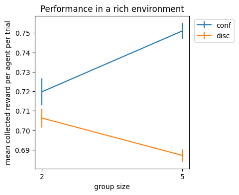

# Define experiment
params = {}
p0 = [0.9]
p1 = [0.7]
rew = 1.
pun = -1
n_trials = 100
n_simu = 500
alphaD = [0.05, 0.15]
alphaC = [0.15, 0.05]
beta = 4.
n_agents = np.array([2, 5])
bias_strength = ["conf", "disc"]
task_name = ["rich"]
path = "example_data/"
version = "v0.0"
params['p0'] = p0
params['p1'] = p1
params['rew'] = rew
params['pun'] = pun
params['n_trials'] = n_trials
params['n_simu'] = n_simu
params['alphaD'] = alphaD
params['alphaC'] = alphaC
params['beta'] = beta
params['n_agents'] = n_agents
params['task_name'] = task_name
params['bias_strength'] = bias_strength
example = RunExperiment(params, path, version)RunExperiment
Provides functions to run simulations of CARL and save the results.
RunExperiment
RunExperiment (params, path, version)
Class for running simulations with CARL and saving results.
Example experiment
As an example, we investigate the impact of group size and bias type (and the interaction of both) on performance in a rich environment. To do so, we consider the following conditions:
- group size: we consider groups of \(2\) and \(5\) agents
- bias type: in the confirmation condition, every agent’s learning rates are \(\alpha_C = 0.15\), and \(\alpha_D = 0.05\); in the disconfirmation condition, the learning rates are \(\alpha_C = 0.05\), and \(\alpha_D = 0.15\).
- environment: in a rich environment, the arms’ rewards probabilities are \(p_0 = 0.9\), and \(p_1 = 0.7\).
To quantify performance, we measure mean reward per agent per trial over simulations.
RunExperiment methods
RunExperiment.SaveParams
RunExperiment.SaveParams ()
Saves simulation parameters and outputs params dataframe.
Input:
- none
Output:
- a pandas dataframe of the experiment’s params
Example
example.SaveParams()| alpha_C | alpha_D | beta | p0 | p1 | n_simu | n_trials | |||
|---|---|---|---|---|---|---|---|---|---|
| scarcity | group_size | bias_strength | |||||||
| rich | 2 | conf | 0.15 | 0.05 | 4.0 | 0.9 | 0.7 | 500.0 | 100.0 |
| disc | 0.05 | 0.15 | 4.0 | 0.9 | 0.7 | 500.0 | 100.0 | ||
| 5 | conf | 0.15 | 0.05 | 4.0 | 0.9 | 0.7 | 500.0 | 100.0 | |
| disc | 0.05 | 0.15 | 4.0 | 0.9 | 0.7 | 500.0 | 100.0 |
RunExperiment.RunAndSave
RunExperiment.RunAndSave ()
Runs experiment according to params and saves results.
Input:
- none
Output:
- a pandas dataframe of the experiment’s results
Example
example.RunAndSave()Group 2, bias strength conf, rich environment done, time=0:00:21.043471
Group 5, bias strength conf, rich environment done, time=0:00:22.824010
Group 2, bias strength disc, rich environment done, time=0:00:19.947783
Group 5, bias strength disc, rich environment done, time=0:00:21.326244| variables | R | C | Q0 | Q1 | ||
|---|---|---|---|---|---|---|
| scarcity | rich | rich | rich | rich | ||
| simus | trials | agent | ||||
| 0 | 0 | 0 | 1.0 | 0.0 | 0.010000 | 8.000000e-02 |
| 1 | 1.0 | 1.0 | 0.030000 | 1.734723e-18 | ||
| 2 | 1.0 | 1.0 | 0.030000 | 1.734723e-18 | ||
| 3 | -1.0 | 1.0 | 0.030000 | 1.734723e-18 | ||
| 4 | 1.0 | 1.0 | 0.030000 | 1.734723e-18 | ||
| ... | ... | ... | ... | ... | ... | ... |
| 499 | 99 | 0 | 1.0 | 1.0 | 0.635815 | 4.627175e-01 |
| 1 | 1.0 | 0.0 | 0.592761 | 4.571933e-01 | ||
| 2 | 1.0 | 1.0 | 0.644681 | 4.522347e-01 | ||
| 3 | -1.0 | 1.0 | 0.577909 | 5.228634e-01 | ||
| 4 | 1.0 | 0.0 | 0.686065 | 4.928230e-01 |
250000 rows × 4 columns
RunExperiment.GetMeansAndStds
RunExperiment.GetMeansAndStds ()
Extracts means and standard deviations from the data and puts them into a numpy array.
Input:
- none
Output:
meanR_array: numpy array containing mean collected rewards over simulations, per agent per trialstdR_array: numpy array containing standard deviation of collected rewards over simulations, per agent per trial
Example
meanR_array, stdR_array = example.GetMeansAndStds()# Plot results
CI_array = 1.96 * stdR_array / np.sqrt(n_simu) # confidence intervals
plt.figure(figsize=(4, 4))
plt.errorbar(n_agents, meanR_array[0, 0, :], yerr=CI_array[0, 0, :], label=bias_strength[0])
plt.errorbar(n_agents, meanR_array[0, 1, :], yerr=CI_array[0, 1, :], label=bias_strength[1])
plt.xlabel("group size")
plt.ylabel("mean collected reward per agent per trial")
plt.xticks([2, 5])
plt.legend(bbox_to_anchor=(1.01, 1))
plt.title("Performance in a rich environment")
plt.show()